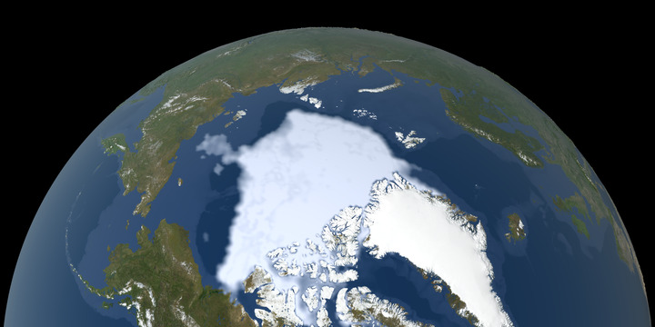
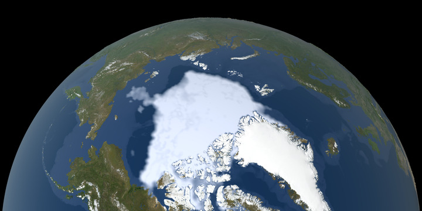

Динамика арктического морского льда (1979-2022)
Визуализация ежегодных минимальных значений площади морского льда в Северном Ледовитом океане
по данным спутниковых наблюдений NASA и NSIDC
по данным спутниковых наблюдений NASA и NSIDC


 


Ключевые факты:
• 1979-2022: Арктический морской лёд сокращается со скоростью 12.6% за десятилетие (относительно среднего значения за 1981-2010 гг.)
• Рекордный минимум: В 2012 году зафиксирована минимальная площадь льда - 3.39 млн км²
• Толщина льда также уменьшилась на 40% с 1979 года
• По прогнозам, к 2050 году Арктика может полностью освобождаться ото льда летом
Данные: NASA Earth Observatory, NSIDC (Национальный центр данных по снегу и льду)